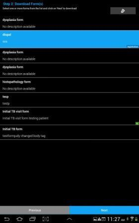
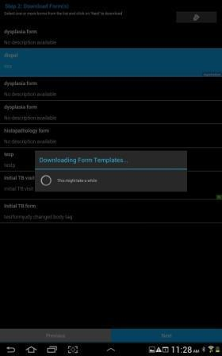
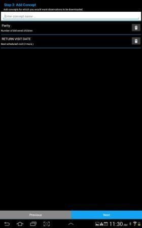
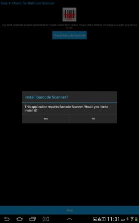
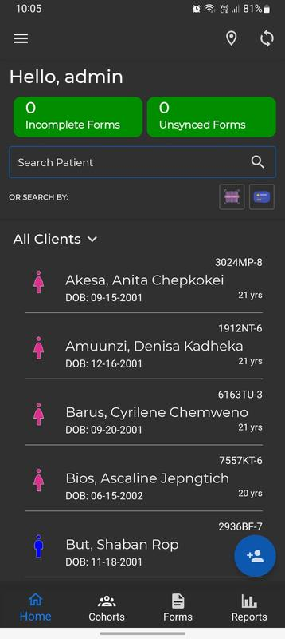
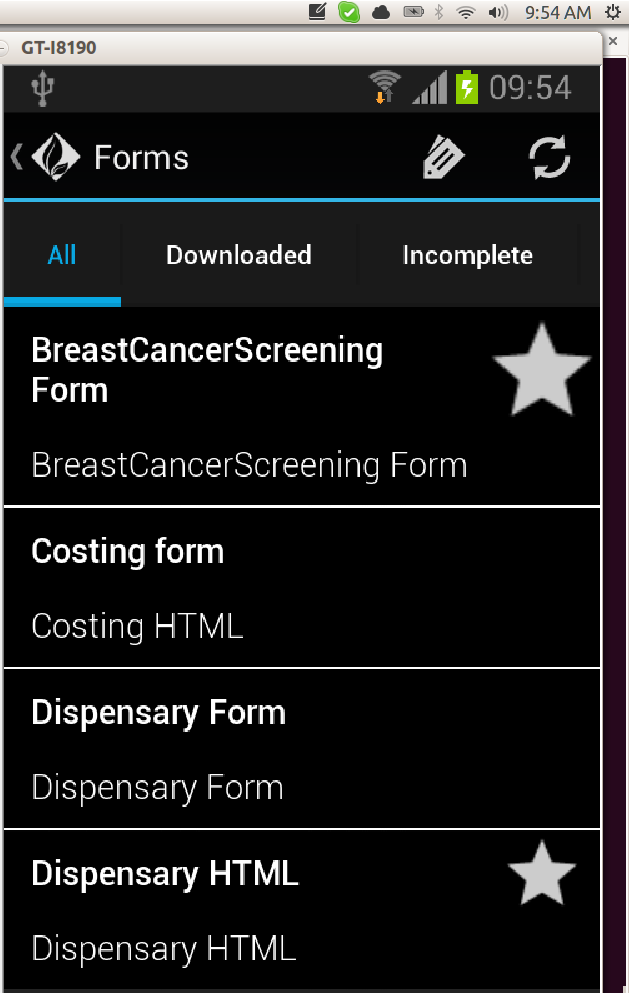
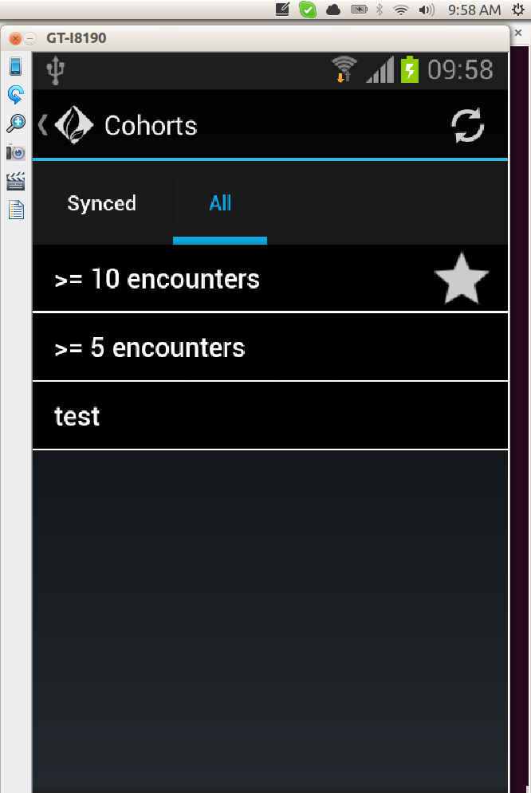

mUzima
An android platform application that renders html5 forms with built in logics and constrains. The application has various prompts including text, number, location, and multimedia which can run in online and offline situations.
Installation
You will need an Android device to install mUzima. Or install an emulator if you do not have one.
Using the Application
- mUzima application will appear in your applications drawer. Select it to launch the application.
First time login
- The first time you log in, you will have three text input prompts.
- URL field: this is the prompt for the url to the server that the application will be communicating to. e.g
"https://amrs.ampath.or.ke/amrs/".
- Username: enter the valid username for the user to use the application. This user must be a valid
provider on the server.
- Password: enter the password for the username given in the username prompt.
After successful authentication you will be taken through a wizard to set up mUzima app.
Step 1: Download Cohort(s) [optional]
This step requires you to select one or more cohorts from the list then click Next button
Step 2: Download Form Template(s) [required]
In this step, you are required to select one or more form templates from
the list and click Next button to start download. Upon clicking next, a dialog notification box will pop up with a
message "Downloading Form Templates...."


Step 3: Add Concept [optional]
For this step, the user is allowed (not compulsory if the user is unsure) to add concepts for which they would want observations
to be downloaded and click Next button.

Step 4: Barcode Scanner [optional]
Check for barCode scanner application. This step is optional and you can skip if you do not want to use a barcode scanner

After completing the above steps, You will be taken to the mUzima Clinic Dashboard page. The dashboard consist of
:
- Cohorts
- Clients
- Forms

Once you click on forms, the following interface will appear. Choose the form you want to fill.

Cohorts:
A cohort is a list of patients. This can be a static list of patient that never change (like a cohort of
patients in a study) or a dynamic list of patient that is regenerated every time (like a cohort of
'all male patients over 65 years in age').
